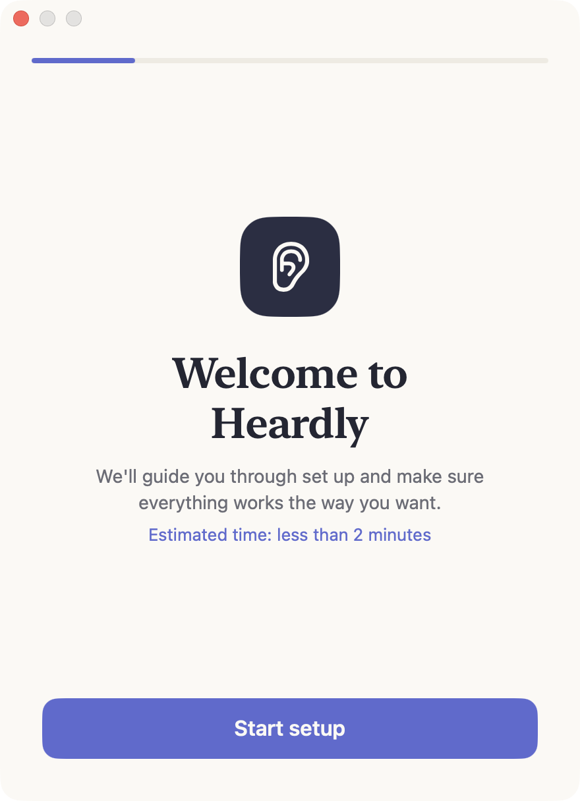

Установка и первый запускInstall and first launch
Heardly ставится как обычное приложение для Mac: скачать образ, перетащить в «Программы», запустить. Первый запуск занимает чуть больше времени — приложение готовит модель распознавания.Heardly installs like any Mac app: download the disk image, drag it to Applications, launch it. The first launch takes a little longer because the app prepares the recognition model.
УстановкаInstalling
-
Скачайте образDownload the disk image
Кнопка «Скачать» наверху этой страницы ведёт на последнюю версию. Файл называется
Heardly.dmg.The Download button at the top of this page points at the latest version. The file is called
Heardly.dmg. -
Перетащите Heardly в «Программы»Drag Heardly into Applications
Откройте скачанный
.dmgи перетащите значок в папку «Программы». Запускать приложение прямо из образа не нужно: оттуда не работает автообновление.Open the downloaded
.dmgand drag the icon into the Applications folder. Don’t run the app straight from the disk image — automatic updates don’t work from there. -
Запустите приложениеLaunch the app
Значок Heardly появится в строке меню, справа вверху. Окна в Dock у приложения нет — оно всё время живёт в строке меню.
The Heardly icon appears in the menu bar, top right. The app has no Dock window — it lives in the menu bar.
-
Выдайте разрешенияGrant the permissions
При первом запуске Heardly попросит доступ к микрофону, а для записи звонков — к системному звуку. Что именно и зачем — на странице Разрешения macOS.
On first launch Heardly asks for the microphone, and for system audio if you want to record calls. What each one is for is on the macOS permissions page.

Первый запуск и подготовка моделиFirst launch and model preparation
В строке меню Heardly показывает состояние: пока модель грузится и готовится, в попапе стоит соответствующая надпись, а как только всё готово — «Модель готова» с зелёной точкой.
Подготовка модели под Neural Engine делается один раз после установки и ещё раз после крупного обновления macOS. На M1 это может занять до пары минут, дальше запуск почти мгновенный.
The menu bar panel shows the current state: a line about loading while the model is being downloaded and prepared, and “Model ready” with a green dot once it is done.
Preparing the model for the Neural Engine happens once after installation, and again after a major macOS update. On an M1 this can take up to a couple of minutes; after that, startup is close to instant.
Если прервать подготовку модели, при следующем запуске она начнётся заново.If you interrupt the preparation, it starts again from scratch on the next launch.
Запуск вместе с системойStarting with the Mac
Чтобы Heardly был под рукой сразу после включения компьютера, включите «Запускать при входе в систему» в разделе Настройки → Система.
Если macOS не даёт включить, разрешите Heardly в «Системных настройках» → «Основные» → «Объекты входа».
To have Heardly ready as soon as the Mac starts, turn on “Launch at login” in Settings → System.
If macOS refuses, approve Heardly in System Settings → General → Login Items.
ОбновленияUpdates
Heardly обновляется сам и показывает окно с описанием версии. Проверить вручную можно кнопкой «Проверить обновления» в настройках.
Heardly updates itself and shows a window describing the new version. You can also check by hand with the “Check for updates” button in Settings.